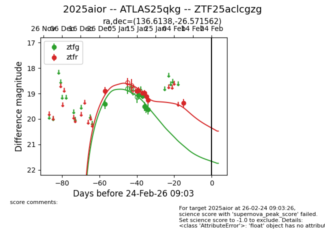
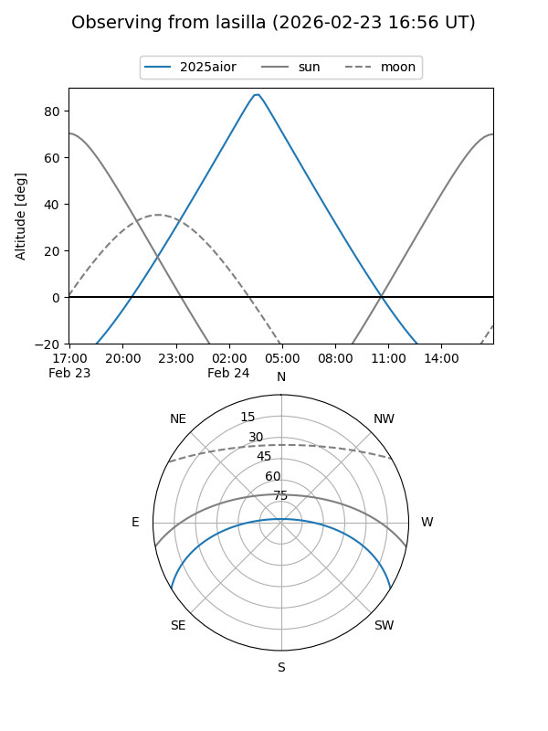
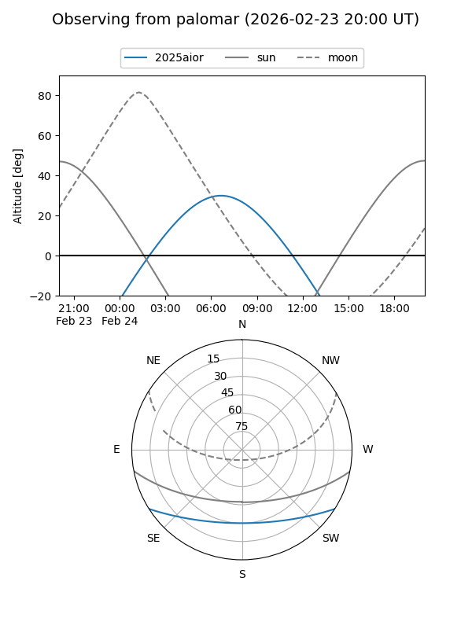
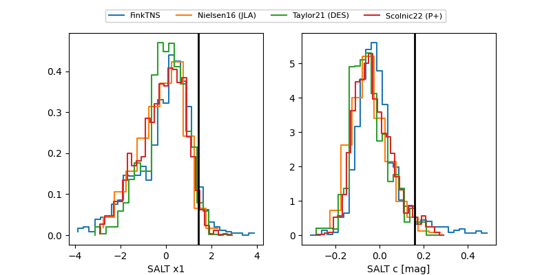

2025aior
Target 2025aior at 2025-12-30 00:05
Aliases and brokers:
FINK: fink-portal.org/ZTF25aclcgzg
Lasair: lasair-ztf.lsst.ac.uk/objects/ZTF25aclcgzg
ALeRCE: alerce.online/object/ZTF25aclcgzg
TNS: wis-tns.org/object/2025aior
YSE: ziggy.ucolick.org/yse/transient_detail/2025aior
alt names
ZTF25aclcgzg (ztf,fink_ztf)
2025aior (tns,yse)
ATLAS25qkg (atlas)
Coordinates:
equatorial (ra, dec) = 136.6138,-26.57156
equatorial (HMS+DMS) = 09:06:27.31,-26:34:17.62
galactic (l, b) = (252.9654,+13.78660)
Flags:
Photometry:
last ztfr=18.90
1 ztfr detections
Lightcurve

Visibility


Additional plots
